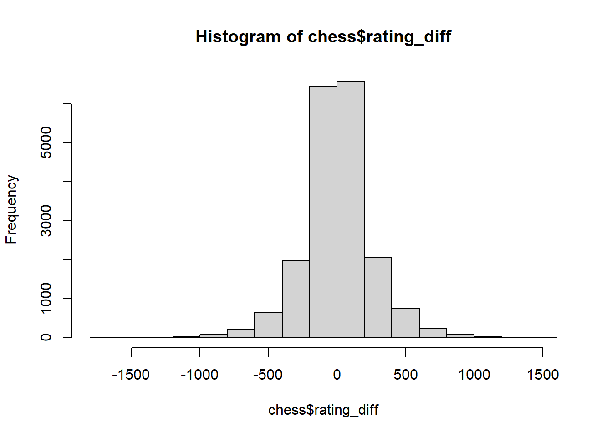

Code
library(tidyverse)
knitr::opts_chunk$set(echo = TRUE)library(tidyverse)
knitr::opts_chunk$set(echo = TRUE)In 2020, after the release of the Netflix series The Queen’s Gambit, interest in chess was at an all-time high. This led many fans of the show to use popular websites such as Chess.com and Lichess.org to begin learning the game. These websites use a rating system that mimics that of official in-person chess leagues, increasing your rating number as you win and decreasing as you lose. This can be used to measure one’s skill in chess, and determining if they can enter certain competitions.
When playing chess online, as you face someone completely random that the website matches you against, there is no guarantee that you will play against someone with an identical rating. Thus, there will typically be a difference between the two players’ rating. Obviously the player with the higher rating would be more likely to win, right? That is where this study comes in. By quantifying the effect of rating difference on win chance, players may be able to understand more about the match they are currently in. Knowing how likely they are to win, how likely their opponent is to win, and this could lead to further interesting research about making the most fair chess matches possible. As there are not any academic studies on the topic, there is no proven indicator that a slight discrepancy in rating has is an indicator to a player’s win chance. This poses the research question:
How strong of a predictor is the difference between players chess rating in determining the victor?
The dataset being used is sourced from Kaggle: https://www.kaggle.com/datasets/datasnaek/chess
Gathered in 2016, the dataset contains information from over 20,000 matches on Lichess.org via the Lichess API. Information on the players’, their opening moves, the results of the match, and more are all columns within the dataset. There was no selection criteria - it was simply the most recent games taken from the top 100 teams on the Lichess website, consisting of over 1,500 players. This should provide an adequate sample for building regression models.
#reading in the dataset
chess <- read.csv("_data/chess_games.csv")str(chess)'data.frame': 20058 obs. of 16 variables:
$ id : chr "TZJHLljE" "l1NXvwaE" "mIICvQHh" "kWKvrqYL" ...
$ rated : chr "FALSE" "TRUE" "TRUE" "TRUE" ...
$ created_at : num 1.5e+12 1.5e+12 1.5e+12 1.5e+12 1.5e+12 ...
$ last_move_at : num 1.5e+12 1.5e+12 1.5e+12 1.5e+12 1.5e+12 ...
$ turns : int 13 16 61 61 95 5 33 9 66 119 ...
$ victory_status: chr "outoftime" "resign" "mate" "mate" ...
$ winner : chr "white" "black" "white" "white" ...
$ increment_code: chr "15+2" "5+10" "5+10" "20+0" ...
$ white_id : chr "bourgris" "a-00" "ischia" "daniamurashov" ...
$ white_rating : int 1500 1322 1496 1439 1523 1250 1520 1413 1439 1381 ...
$ black_id : chr "a-00" "skinnerua" "a-00" "adivanov2009" ...
$ black_rating : int 1191 1261 1500 1454 1469 1002 1423 2108 1392 1209 ...
$ moves : chr "d4 d5 c4 c6 cxd5 e6 dxe6 fxe6 Nf3 Bb4+ Nc3 Ba5 Bf4" "d4 Nc6 e4 e5 f4 f6 dxe5 fxe5 fxe5 Nxe5 Qd4 Nc6 Qe5+ Nxe5 c4 Bb4+" "e4 e5 d3 d6 Be3 c6 Be2 b5 Nd2 a5 a4 c5 axb5 Nc6 bxc6 Ra6 Nc4 a4 c3 a3 Nxa3 Rxa3 Rxa3 c4 dxc4 d5 cxd5 Qxd5 exd5 "| __truncated__ "d4 d5 Nf3 Bf5 Nc3 Nf6 Bf4 Ng4 e3 Nc6 Be2 Qd7 O-O O-O-O Nb5 Nb4 Rc1 Nxa2 Ra1 Nb4 Nxa7+ Kb8 Nb5 Bxc2 Bxc7+ Kc8 Qd"| __truncated__ ...
$ opening_eco : chr "D10" "B00" "C20" "D02" ...
$ opening_name : chr "Slav Defense: Exchange Variation" "Nimzowitsch Defense: Kennedy Variation" "King's Pawn Game: Leonardis Variation" "Queen's Pawn Game: Zukertort Variation" ...
$ opening_ply : int 5 4 3 3 5 4 10 5 6 4 ...The dataset contains 20058 observations across 16 variables.
summary(chess) id rated created_at last_move_at
Length:20058 Length:20058 Min. :1.377e+12 Min. :1.377e+12
Class :character Class :character 1st Qu.:1.478e+12 1st Qu.:1.478e+12
Mode :character Mode :character Median :1.496e+12 Median :1.496e+12
Mean :1.484e+12 Mean :1.484e+12
3rd Qu.:1.503e+12 3rd Qu.:1.503e+12
Max. :1.504e+12 Max. :1.504e+12
turns victory_status winner increment_code
Min. : 1.00 Length:20058 Length:20058 Length:20058
1st Qu.: 37.00 Class :character Class :character Class :character
Median : 55.00 Mode :character Mode :character Mode :character
Mean : 60.47
3rd Qu.: 79.00
Max. :349.00
white_id white_rating black_id black_rating
Length:20058 Min. : 784 Length:20058 Min. : 789
Class :character 1st Qu.:1398 Class :character 1st Qu.:1391
Mode :character Median :1567 Mode :character Median :1562
Mean :1597 Mean :1589
3rd Qu.:1793 3rd Qu.:1784
Max. :2700 Max. :2723
moves opening_eco opening_name opening_ply
Length:20058 Length:20058 Length:20058 Min. : 1.000
Class :character Class :character Class :character 1st Qu.: 3.000
Mode :character Mode :character Mode :character Median : 4.000
Mean : 4.817
3rd Qu.: 6.000
Max. :28.000 Looking at the summary, it is clear what variables will be used and if any new columns will be added. The following will prove relevance to the research question:
winnerwhite_idwhite_ratingblack_idblack_ratingturnsopening_ecoopening_nameA new column containing the difference between the rating will be added in the next iteration for analysis. Having this added column will make the functions necessary for analysis easier, as calculating the difference will not need to be repeated for each observation.
range(chess$white_rating)[1] 784 2700range(chess$black_rating)[1] 789 2723The ranges of the two sides are nearly identical, and are quite large nearing 2000. This could be both good and bad for the study, as the large range could prove significant, but it may be necessary to break the models into smaller ranges. This could also be interesting, perhaps seeing if the rating differences at a lower level matter more than that of a higher level, or vice versa.
The obvious model for this question will be a a linear probability regression, as the victory status is a binary variable. Proposed models initially are:
Linear probability including unranked Linear probability excluding unranked
There will be more models, potentially differentiating between the different ranges as stated earlier. More possibilities include looking at exclusively drawn game data, analyzing favored openings depending on rank, or possibly finding other predictors if the rank difference is not significant.
To begin constructing the models, the difference in rank column needs to be added. This can be done using simple R commands. The victor will also be made into bingary numeric of 0 and 1, 0 being a white victory and 1 being a black victory. Draw results will be removed to allow use of linear probability.
chess <- chess[chess$winner != 'draw' ,]
chess <- chess %>%
mutate(winner = recode(winner, "white" = "0", "black" = "1")) %>%
mutate(winner = as.numeric(winner))
chess$rating_diff <- chess$white_rating - chess$black_rating
range(chess$rating_diff)[1] -1605 1499hist(chess$rating_diff)
With the difference in rating defined, an initial model can be made with the difference as an explanatory variable, and the winner as the response variable.
winner1 <- lm(winner ~ rating_diff, data = chess)
summary(winner1)
Call:
lm(formula = winner ~ rating_diff, data = chess)
Residuals:
Min 1Q Median 3Q Max
-1.3770 -0.4462 -0.1038 0.4733 1.2555
Coefficients:
Estimate Std. Error t value Pr(>|t|)
(Intercept) 4.821e-01 3.362e-03 143.37 <2e-16 ***
rating_diff -7.317e-04 1.341e-05 -54.57 <2e-16 ***
---
Signif. codes: 0 '***' 0.001 '**' 0.01 '*' 0.05 '.' 0.1 ' ' 1
Residual standard error: 0.4646 on 19106 degrees of freedom
Multiple R-squared: 0.1349, Adjusted R-squared: 0.1348
F-statistic: 2978 on 1 and 19106 DF, p-value: < 2.2e-16The barebones model shows what was to be expected. A statistically significant relationship between the difference in rating and the outcome of the match. The p value being astronomically low confirms that the explanatory variable undoubtably affectts the dependent variable. Just from this barebones graph though, it is interesting to see how few outliers there are when visualized. Much more can be done both visually and statistically with this dataset however, so let’s make more models, first controlling for the amount of turns taken in the match.
winner2 <- lm(winner ~ rating_diff + turns, data = chess)
summary(winner2)
Call:
lm(formula = winner ~ rating_diff + turns, data = chess)
Residuals:
Min 1Q Median 3Q Max
-1.34504 -0.44679 -0.09632 0.47048 1.24682
Coefficients:
Estimate Std. Error t value Pr(>|t|)
(Intercept) 4.524e-01 7.018e-03 64.467 < 2e-16 ***
rating_diff -7.295e-04 1.341e-05 -54.399 < 2e-16 ***
turns 5.009e-04 1.040e-04 4.815 1.48e-06 ***
---
Signif. codes: 0 '***' 0.001 '**' 0.01 '*' 0.05 '.' 0.1 ' ' 1
Residual standard error: 0.4643 on 19105 degrees of freedom
Multiple R-squared: 0.1359, Adjusted R-squared: 0.1358
F-statistic: 1502 on 2 and 19105 DF, p-value: < 2.2e-16plot(x = chess$rating_diff,
y = chess$winner)
abline(winner1, col = "green")
abline(h = .5, lty = 2, col = "black")
abline(v = 0, lty = 2, col = "darkred")
abline(winner2, col = "red")Warning in abline(winner2, col = "red"): only using the first two of 3
regression coefficients
I included the original regression line to show for comparison. The color will be green to easily differentiate it from future regression models. When controlling for the amount of turns taken in the match, a line slightly favoring a black victory is created. This is interesting, potentially implying that the amount of turns may matter more as the white player. This result is also statistically significant, as all of the models likely will be, given the obvious relationship between the two main variables.
The third model that will be tested is a probit regression, as well as using a predict function to create a more appealing and more applicable regression line.
winner3 <- glm(winner ~ rating_diff, family = binomial(link = "logit"), data = chess)
plot(x = chess$rating_diff,
y = chess$winner)
x <- seq(-1500, 1500, 10)
y <- predict(winner3, list(rating_diff = x), type = "response")
lines(x, y)The probit model aims to determine the likelihood that a victory will occur based on the rating difference. This differs from the previous linear models, as the predicted value can exceed the binary range that we are looking for (the victory). By using a probit (or logit) model, as well as an s curve to visualize, this will prove more beneficial for future models.
##Continued Work
More models can and will be made using this data. As I further my knowledge of regression, as well as spend time working with the dataset. This check-in was just to show that I have something, and I plan to upload a “check-in 2.5” as time permits prior to the final submission.
Some example changes to future models are: Excluding extreme outliers Narrowing down the difference range significantly to see if a difference of just 10-20 points is significant Testing with more different opening moves to see the difference they could make
I also anticipate to improve the visualization aspect, with more interesting labels and colors to differentiate between models on a single visualization. The final poster will not have room to have many different models with differing visualizations, so it is important to make the few visualizations as clear and detailed as possible.